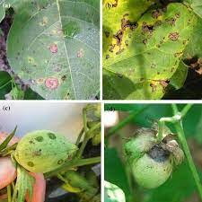
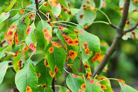
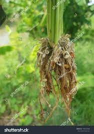
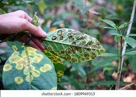
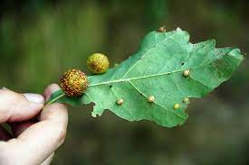

Plant diseases are a severe threat to the entire production. Therefore, it is essential for farmers to
effectively deal with them and check them with the help of timely prevention. Depending on the agricultural
area size, this task can be difficult, especially since the list of harmful crop diseases is quite impressive.
Modern technologies come to the aid of farmers. EOSDA Crop Monitoring allows you to identify dangerous areas
and apply an individual approach to yield treatment, significantly increasing disease control effectiveness.
Crop Diseases Caused By Bacteria
Among the most common infections in agriculture are crop diseases caused by bacteria. In this regard, the
prevention and control of this kind of disease are pretty tricky.To infect the causal agent needs to get into
the culture’s tissue. It occurs mainly through damaged areas, such as caused by agricultural tools, insects
(fleas), or simply unfavorable weather conditions (dust, wind, heavy rain). But bacteria can also infect
plants through natural holes or glands (for example, which secrete nectar).Another feature of bacterial
crop diseases is that causal agents, once in a plant or soil, can remain dormant for a long time until
favorable conditions arise for them. First of all, significant temperature fluctuations and high levels
of humidity act as catalysts for bacterial activity.
Symptoms Of Bacterial Crop Diseases
The main bacterial disease indications include vascular wilting, necrosis, soft rot and tumor.
Although this type of plant disease can be identified due to its pronounced symptoms,
identifying a specific causal agent requires laboratory methods.

Common Bacterial Diseases
Granville wilt exposes itself in growth retardation, wilting of the high culture’s part,
and the death of roots.
Fire blight symptoms include necrotic weeping ulcers, wilting and rolling of leaves,
while the dried parts of a plantdo not fall off.
Wildfire of tobacco is widespread in the world and shows itself as yellowish-green
spots on leaves.
Blight of beans affects leafage with yellow-greenish spots, either localized or systemic.
The discolored parts may turn necrotic.
Aster yellows can be noticed on most vegetables and weeds through malformations and chlorosis.
Measures of Bacterial Disease Control
It is complicated to control bacterial diseases of crop plants for several reasons: high spreading
rate and protection from exposure to chemicals due to being inside the plants. Preventive measures
may include using pathogen-free seeds produced in drought-prone regions, hot water for seed treatment,
soil solarization,control of plant diseases with germicidal compounds of seeds.
Also, crop diseases can be prevented by spraying. Of course, sanitary measures are imperative, which
include weed control,sterilization of tools, proper waste disposal, and avoidance of cultivation under
conditions when leaves are wet.
Crop Diseases Caused By Fungi
Pathogenic fungi are the most typical agricultural problem. According to research, this plant disease
type destroys about a third of all food crops every year. In this regard, this problem is severe both
from a humanitarian and economic point of view.Like bacterial crop diseases, these infections affect
plants mainly through wounds, stomata, and water pores. Also, fungal spores are often carried by gusts
of wind.
Symptoms Of Fungal Crop Diseases
Often, a fungal infection is expressed in local or general necrosis. Also, crop diseases caused
by fungi can interfere with the average growth or contribute to its abnormal burst, called
hypertrophy. Other crop diseases symptoms include:
spots on leaves
exfoliation
rot
anthracnose
ulcers
curls of leaves and warts

Common Fungal Diseases
The list of crop diseases caused by fungi is pervasive, so that we will limit
ourselves to just a list of some of the most common examples of crop plant diseases:
Late blight of potato is expressed by dark green, purple or black lesions with white
mold around the edges.
Black stem rust of wheat is a dangerous disease that mainly affects cereals. It is expressed
in the appearance of rust-colored sori on a plant.
Symptoms of Coffee rust are powdery yellow-orange spots with a brown center on the
lower part of leaves.
Corn smut reveals abnormal formations of various sizes on different corn plant parts,
including stalks, leaves, ears, and tassels.
Loose smut typically affects grasses like barley, oats, or wheat and is diagnosed
through atypical olive-green heads due to the presence of fungi spores.
Powdery mildew looks like powder cover on plants (from trees to grasses) that are
typically grey or white. First, the crop disease shows spots on leaves but spreads to larger areas as it develops.
Anthracnose of grape shows black round spots on foliage leading to its
chlorosis and falling. Anthracnose of grape can also damage stems and fruits.
Fusarium wilt of tomato results in slowed plant development, foliage
wilting, black stripes, and eventually entire plant decay.
Fungal Disease Management
Preventive measures to check crop plant diseases caused by fungi are pretty varied.
Key management actions include destroying plant matter containing dangerous fungi,
using healthy seeds, regular crop rotation, chemical, and biological fungicides.
Crop Diseases Caused By Nematodes
Nematodes are parasitizing plants roundworms, which usually cannot be seen without
special equipment. They live in the soil, and therefore mainly affect roots, tubers,
and bulbs. There are over 4100 dangerous nematode species
.
Symptoms Of Nematode Crop Diseases
Essentially, nematodes feed by sucking juices from plants. Because of this, plants
affected by these parasites often appear dried out, as if they are suffering from
drought. Other symptoms are also similar:
yellowing
growth retardation
lack of response to fertilizers and water
the gradual general decline of a plant
reduction or even destruction of root systems.
Common Nematode Diseases
Diseases directly depend on the type of nematodes:
Fusiform thickening of the stems is provoked by stem worms. The disease is expressed in the deformation of leaves, swelling of petioles, and the appearance of dark spots on tubers.
Aphelenchoides, a disease of rice, is provoked by Aphelenchoides besseyi. Disease marks are blemishes on the tops of leaves, lack of grains, and culture depletion.
Tylenchulus semipenetrans cause serious citrus diseases. It is characterized by the gradual death of not only leaves but also branches.
Root-knot nematodes cause swelling-like malformations on roots of more than 2000 host species including fruit trees, strawberries, vegetables, or cotton.
Root-lesion nematodes destroy plant roots. These pests are often an indirect cause of root rots because the lesions they make are a favorable environment for pathogenic fungi and bacteria.
Golden nematode seriously threatens potato fields and reveals tiny golden spots on plant roots, which are nematode cysts with up to 500 eggs.
Control Of Nematode Diseases
Parasite control involves a wide range of activities. In particular, crop rotation,
improving crop disease resistance, and soil treatment with appropriate fumigants
with nematicides are effective measures. You can also destroy nematodes and their
eggs with hot water (about 50°C/120°F). However, this method of controlling crop
diseases requires accuracy. You should adjust the watering time according to the
temperature to not harm the plants themselves. Measures that promote plant growth
are practical against individual nematodes: heavy mulch, fertigation, watering in
drought, and summer and autumn fallow.

Crop Diseases Caused By Virus
The most minor but most critical plant enemies are viruses and viroids
(subviral contagious agents). After infection, it is almost impossible
to save a plant. Therefore the effect of plant diseases on crop production
is of critical importance throughout the world.In most cases, the infection
spreads as a result of healthy plants with sick contact. Viruses can also
spread through vegetative reproduction, through seeds, pollen, and insects.
But viruses most often spread through the soil.
Symptoms Of Viral Crop Diseases
The symptoms of crop diseases caused by virus are usually divided into four types:
1.malformations, such as abnormal growth of shoots, distortion of leaves and flowers
2.necrosis, wilting and the appearance of annular stripes and spots
3.dwarfism, growth retardation of both individual parts and the whole plant
4.discoloration, e.g. yellowing, and vein clearing.
Root crop diseases, which are expressed in their rotting, are a characteristic indication of the
presence of a virus.However, some plants may not show symptoms and are latent carriers of a disease.
Therefore, extreme vigilance is required in the fight against this infection type.

Common Viral Diseases
Among the common examples of viral diseases in crop plants:
1.Tobacco mosaic manifests in dwarfism and mosaic-like patterns on leaves. The disease is widespread
throughout the world and can have significant economic consequences.
2.Tomato spotted wilt is accompanied by the appearance and growth of necrotic yellow rings that
gradually turn reddish-brown.
3.Potato spindle tuber inhibits plant growth, tubers become fusiform and shrink.
4.Cucumber mosaic virus produces mosaic dots and discolorations, malformations and distortions on
fruits,narrow younger leaves, round spots, and causes general stunted growth.
5.Barley yellow dwarf is a cereal crop disease that is also dangerous to growing wheat. The symptoms
include pale green leaves, chlorosis, poor tillering and flowering, smaller grains, and reduced
yields.
6.Prunus necrotic ring spot virus produces round dots on the leaves of plums, apricots, peaches,
nectarines and other trees of the Prunus family. Early signs are yellowish and brownish leaves
while at severe stages,the symptoms include foliage holes and premature dropping.
7.Citrus exocortis causes stunted development in infected plants and affects leaf midribs and crowns,
leading to necrosis.Another sign is root bark peeling (aka rootstock molting)
Control Of Crop Diseases Caused By Viruses
Unlike previous infections, most vegetable crop disease caused by viruses is extremely difficult to
defeat, often impossible.Therefore, control, in this case, should be as effective as possible. Among
the most common measures is the cultivation of resistant crops, indexing, determining the absence or
virus presence that is not mechanically transmitted. The plant under study is grafted onto an indicator
plant, which develops corresponding symptoms in the virus presence. Unfortunately, sometimes it is
necessary to destroy infected cultures, and if large agricultural areas are affected, even to introduce
quarantine to save the rest of the crop yield.
Crop Diseases Caused By Parasitic Plants
Parasitic plants are among the most dangerous plant pests in the world. With the help of particular
organs, these plants settle in a host plant and satisfy at the expense of it (most often its vascular
system). Although many parasites only weaken their “prey”,some can kill a plant and pose a severe
economic threat to agriculture. Depending on the species, parasites can attach from one to several
dozen plant species.

Common Parasitic Plants
Today, there are about 400 parasitic plant species that have a substantial impact on the ecosystem in
which they exist. Let’s look at a few common examples.
Mistletoe (Viscaceae)
This semi-parasitic plant is widely represented throughout the world and is evergreen. As a parasite,
mistletoe can exist on a significant number of plant species. It spreads thanks to special seeds that
stick to birds and are carried with them to other plants. These seeds germinate through the host plant
bark and connect to its food system.
Cuscuta spp
Cuscuta spp. is a parasitic bindweed plant, which is very dangerous for various plants. It actively
spreads, disrupts the metabolism of host plants, reduces productivity, and often leads to the death
of plants. Moreover, Cuscuta spp. can be a carrier of viral plant and animal diseases. Because of all
these features, the weed is a quarantine object.
Orobanche spp
It is a dangerous root parasite without green leaves that cannot photosynthesize, and is utterly
dependent on a host. For seed germination of Orobanche spp., it is required that a suitable plant
is planted in the soil. Then the weed will attach to its roots and begin to receive ready-made
food. The parasite leaves up to 100,000 seeds. They remain viable in the ground for over ten years
while waiting for a host. All it makes Orobanchespp. a dangerous pest.
Striga spp
This group of parasitic plants is mainly found in tropical and subtropical regions and belongs to
quarantine plants. In African countries, they are classified as a pandemic since Striga spp. can
destroy up to 100 percent of a plant and cause irreparable economic damage. Primarily, this herb
infects cereals but can also parasitize other plants, for example, when growing sugar cane. It’s
spread through seeds, growing together when ripe with the root system of a host plant. These
parasites are very tenacious, so re-planting of a previously infected area is possible after nine
years. In regions dependent on agriculture, the Striga spp. can even lead to the migration of people.
Witchweed
Witchweed is a renowned parasitic plant of the Striga family that grows in the countries of Africa
and Asia. Witchweed damages the roots of corn, sorghum,sugarcane, and other agricultural types.
In particular, witchweed threatens growing rice. Depriving host plants of water and nutrients, this
parasitic plant significantly reduces yields. The deprived plants suffer from chlorosis and stunted
growth, and often die prematurely. A single witchweed plant can produce hundreds of thousands of seeds
that can survive in the soil for years. Wtichweeds are quite hard to control and are typically tackled
with crop rotation,trap plants, and treatment with herbicides.
Methods Of Controlling Crop Diseases Caused By Parasitic Plants
There are different ways of pest control. One of them is “suicidal germination,” cultivating the
soil to create favorable conditions for a parasite.In the absence of a host, the germinated seeds
will die.
Also, farmers actively apply herbicides to resistant crops, which prevents parasites from attaching
to them. However, these preparations are pretty expensive. Therefore, it is often necessary to use
manual weeding and rotation of crops that are not hosts. However, the most helpful remedy remains
the use of naturally sustainable plants.
Crop Protection And Disease Control With Satellite-Derived Data
The first step towards crop disease management is understanding the essence of an illness and
the process of its development. Also, remember that any crop can get sick, and abiotic factors,
such as unfavorable weather conditions, weaken the plants and increase the risk of infection.
Causal agents are activated in the presence of many factors; therefore, the prevention measures
of crop plant diseases should be well-thought-out and comprehensive. The use of satellite
data allows farmers to arm themselves with all the necessary information for these purposes.
They can remotely monitor the state of fields, predict future changes,and plan agricultural
processes, including preventive measures to prevent crop disease.